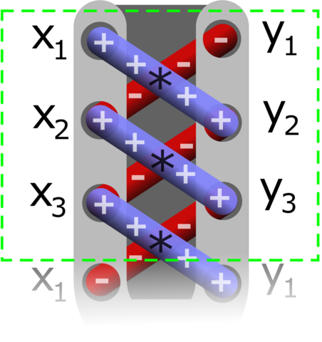

Clase 4: Iteraciones y detalles de Funciones
Técnicas de iteración
Introdujimos tipos complejos: strings, listas, tuples, diccionarios
(dict), conjuntos (set). Veamos algunas técnicas usuales de
iteración sobre estos objetos.
Iteración sobre elementos de dos listas
Consideremos las listas:
temp_min = [-3.2, -2, 0, -1, 4, -5, -2, 0, 4, 0]
temp_max = [13.2, 12, 13, 7, 18, 5, 11, 14, 10 , 10]
Queremos imprimir una lista que combine los dos datos:
for t1, t2 in zip(temp_min, temp_max):
print(f"La temperatura mínima fue {t1} y la máxima fue {t2}")
La temperatura mínima fue -3.2 y la máxima fue 13.2
La temperatura mínima fue -2 y la máxima fue 12
La temperatura mínima fue 0 y la máxima fue 13
La temperatura mínima fue -1 y la máxima fue 7
La temperatura mínima fue 4 y la máxima fue 18
La temperatura mínima fue -5 y la máxima fue 5
La temperatura mínima fue -2 y la máxima fue 11
La temperatura mínima fue 0 y la máxima fue 14
La temperatura mínima fue 4 y la máxima fue 10
La temperatura mínima fue 0 y la máxima fue 10
Como vemos, la función zip nos permite combinar los elementos,
tomando uno de cada lista por iteración.
¿Qué retorna exactamente `zip``?
print(zip(temp_min, temp_max))
list(zip(temp_min, temp_max))
<zip object at 0x7f325a706480>
[(-3.2, 13.2),
(-2, 12),
(0, 13),
(-1, 7),
(4, 18),
(-5, 5),
(-2, 11),
(0, 14),
(4, 10),
(0, 10)]
Podemos agregar información del día en la salida por pantalla si
volvemos a utilizar la función enumerate
for j, t in enumerate(zip(temp_min, temp_max)):
print(f'El día {j+1} la temperatura mínima fue {t[0]} y la máxima fue {t[1]}')
El día 1 la temperatura mínima fue -3.2 y la máxima fue 13.2
El día 2 la temperatura mínima fue -2 y la máxima fue 12
El día 3 la temperatura mínima fue 0 y la máxima fue 13
El día 4 la temperatura mínima fue -1 y la máxima fue 7
El día 5 la temperatura mínima fue 4 y la máxima fue 18
El día 6 la temperatura mínima fue -5 y la máxima fue 5
El día 7 la temperatura mínima fue -2 y la máxima fue 11
El día 8 la temperatura mínima fue 0 y la máxima fue 14
El día 9 la temperatura mínima fue 4 y la máxima fue 10
El día 10 la temperatura mínima fue 0 y la máxima fue 10
for j, (t1,t2) in enumerate(zip(temp_min, temp_max),1):
print(f'El día {j} la temperatura mínima fue {t1} y la máxima fue {t2}')
El día 1 la temperatura mínima fue -3.2 y la máxima fue 13.2
El día 2 la temperatura mínima fue -2 y la máxima fue 12
El día 3 la temperatura mínima fue 0 y la máxima fue 13
El día 4 la temperatura mínima fue -1 y la máxima fue 7
El día 5 la temperatura mínima fue 4 y la máxima fue 18
El día 6 la temperatura mínima fue -5 y la máxima fue 5
El día 7 la temperatura mínima fue -2 y la máxima fue 11
El día 8 la temperatura mínima fue 0 y la máxima fue 14
El día 9 la temperatura mínima fue 4 y la máxima fue 10
El día 10 la temperatura mínima fue 0 y la máxima fue 10
# ¿Qué pasa cuando una se consume antes que la otra?
for t1, t2 in zip([1,2,3,4,5],[3,4,5]):
print(t1,t2)
1 3
2 4
3 5
zip funciona también con más de dos listas
for j,t1,t2 in zip(range(1,len(temp_min)+1),temp_min, temp_max):
print(f'El día {j} la temperatura mínima fue {t1} y la máxima fue {t2}')
El día 1 la temperatura mínima fue -3.2 y la máxima fue 13.2
El día 2 la temperatura mínima fue -2 y la máxima fue 12
El día 3 la temperatura mínima fue 0 y la máxima fue 13
El día 4 la temperatura mínima fue -1 y la máxima fue 7
El día 5 la temperatura mínima fue 4 y la máxima fue 18
El día 6 la temperatura mínima fue -5 y la máxima fue 5
El día 7 la temperatura mínima fue -2 y la máxima fue 11
El día 8 la temperatura mínima fue 0 y la máxima fue 14
El día 9 la temperatura mínima fue 4 y la máxima fue 10
El día 10 la temperatura mínima fue 0 y la máxima fue 10
Podemos utilizar la función zip para sumar dos listas término a
término
tmedia = []
for t1, t2 in zip(temp_min, temp_max):
tmedia.append((t1+t2)/2)
print(tmedia)
[5.0, 5.0, 6.5, 3.0, 11.0, 0.0, 4.5, 7.0, 7.0, 5.0]
También podemos escribirlo en forma más compacta usando comprensiones de listas
tm = [(t1+t2)/2 for t1,t2 in zip(temp_min,temp_max)]
print(tm)
[5.0, 5.0, 6.5, 3.0, 11.0, 0.0, 4.5, 7.0, 7.0, 5.0]
Iteraciones sobre diccionarios
# temps = {j:{"Tmin": temp_min[j], "Tmax":temp_max[j]} for j in range(len(temp_min))}
temps = {j:{"Tmin": tmin, "Tmax":tmax} for j,(tmin,tmax) in enumerate(zip(temp_min, temp_max))}
temps
{0: {'Tmin': -3.2, 'Tmax': 13.2},
1: {'Tmin': -2, 'Tmax': 12},
2: {'Tmin': 0, 'Tmax': 13},
3: {'Tmin': -1, 'Tmax': 7},
4: {'Tmin': 4, 'Tmax': 18},
5: {'Tmin': -5, 'Tmax': 5},
6: {'Tmin': -2, 'Tmax': 11},
7: {'Tmin': 0, 'Tmax': 14},
8: {'Tmin': 4, 'Tmax': 10},
9: {'Tmin': 0, 'Tmax': 10}}
for k in temps:
print(f'La temperatura máxima del día {k} fue {temps[k]["Tmax"]} y la mínima {temps[k]["Tmin"]}')
La temperatura máxima del día 0 fue 13.2 y la mínima -3.2
La temperatura máxima del día 1 fue 12 y la mínima -2
La temperatura máxima del día 2 fue 13 y la mínima 0
La temperatura máxima del día 3 fue 7 y la mínima -1
La temperatura máxima del día 4 fue 18 y la mínima 4
La temperatura máxima del día 5 fue 5 y la mínima -5
La temperatura máxima del día 6 fue 11 y la mínima -2
La temperatura máxima del día 7 fue 14 y la mínima 0
La temperatura máxima del día 8 fue 10 y la mínima 4
La temperatura máxima del día 9 fue 10 y la mínima 0
Como comentamos anteriormente, cuando iteramos sobre un diccionario
estamos moviéndonos sobre las (k)eys. El ejemplo anterior es
equivalente a:
for k in temps.keys():
print(f'La temperatura máxima del día {k} fue {temps[k]["Tmax"]} y la mínima {temps[k]["Tmin"]}')
La temperatura máxima del día 0 fue 13.2 y la mínima -3.2
La temperatura máxima del día 1 fue 12 y la mínima -2
La temperatura máxima del día 2 fue 13 y la mínima 0
La temperatura máxima del día 3 fue 7 y la mínima -1
La temperatura máxima del día 4 fue 18 y la mínima 4
La temperatura máxima del día 5 fue 5 y la mínima -5
La temperatura máxima del día 6 fue 11 y la mínima -2
La temperatura máxima del día 7 fue 14 y la mínima 0
La temperatura máxima del día 8 fue 10 y la mínima 4
La temperatura máxima del día 9 fue 10 y la mínima 0
En este caso, para referirnos al valor tenemos que hacerlo en la forma
temps[k], y no siempre es una manera muy clara de escribir las
cosas. Otra manera similar, pero más limpia en este caso sería:
for k, v in temps.items():
print(f"La temperatura máxima del día {k} fue {v['Tmin']} y la mínima {v['Tmax']}")
La temperatura máxima del día 0 fue -3.2 y la mínima 13.2
La temperatura máxima del día 1 fue -2 y la mínima 12
La temperatura máxima del día 2 fue 0 y la mínima 13
La temperatura máxima del día 3 fue -1 y la mínima 7
La temperatura máxima del día 4 fue 4 y la mínima 18
La temperatura máxima del día 5 fue -5 y la mínima 5
La temperatura máxima del día 6 fue -2 y la mínima 11
La temperatura máxima del día 7 fue 0 y la mínima 14
La temperatura máxima del día 8 fue 4 y la mínima 10
La temperatura máxima del día 9 fue 0 y la mínima 10
Si queremos iterar sobre los valores podemos utilizar simplemente:
for v in temps.values():
print(v)
{'Tmin': -3.2, 'Tmax': 13.2}
{'Tmin': -2, 'Tmax': 12}
{'Tmin': 0, 'Tmax': 13}
{'Tmin': -1, 'Tmax': 7}
{'Tmin': 4, 'Tmax': 18}
{'Tmin': -5, 'Tmax': 5}
{'Tmin': -2, 'Tmax': 11}
{'Tmin': 0, 'Tmax': 14}
{'Tmin': 4, 'Tmax': 10}
{'Tmin': 0, 'Tmax': 10}
Remarquemos que los diccionarios no tienen definidos un orden por lo que no hay garantías que la próxima vez que ejecutemos cualquiera de estas líneas de código el orden del resultado sea exactamente el mismo. Además, si queremos imprimirlos en un orden predecible debemos escribirlo explícitamente. Por ejemplo:
L = list(temps.keys())
L.sort(reverse=True)
for k in L:
print(k, temps[k])
9 {'Tmin': 0, 'Tmax': 10}
8 {'Tmin': 4, 'Tmax': 10}
7 {'Tmin': 0, 'Tmax': 14}
6 {'Tmin': -2, 'Tmax': 11}
5 {'Tmin': -5, 'Tmax': 5}
4 {'Tmin': 4, 'Tmax': 18}
3 {'Tmin': -1, 'Tmax': 7}
2 {'Tmin': 0, 'Tmax': 13}
1 {'Tmin': -2, 'Tmax': 12}
0 {'Tmin': -3.2, 'Tmax': 13.2}
La secuencia anterior puede escribirse en forma más compacta como
for k in sorted(temps,reverse=True):
print(k, temps[k])
9 {'Tmin': 0, 'Tmax': 10}
8 {'Tmin': 4, 'Tmax': 10}
7 {'Tmin': 0, 'Tmax': 14}
6 {'Tmin': -2, 'Tmax': 11}
5 {'Tmin': -5, 'Tmax': 5}
4 {'Tmin': 4, 'Tmax': 18}
3 {'Tmin': -1, 'Tmax': 7}
2 {'Tmin': 0, 'Tmax': 13}
1 {'Tmin': -2, 'Tmax': 12}
0 {'Tmin': -3.2, 'Tmax': 13.2}
Ejercicios 04 (a)
Un método para calcular el área de un polígono (no necesariamente regular) que se conoce como fórmula del área de Gauss o fórmula de la Lazada (shoelace formula) consiste en describir al polígono por sus puntos en un sistema de coordenadas. Cada punto se describe como un par \((x,y)\) y la fórmula del área está dada mediante la suma de la multiplicación de los valores en una diagonal a los que se le resta los valores en la otra diagonal, como muestra la figura
\[2 A = (x_{1} y_{2} + x_{2} y_{3} + x_{3} y_{4} + \dots) - (x_{2} y_{1} + x_{3} y_{2} + x_{4} y_{3} + \dots)\]
Utilizando una descripción adecuada del polígono, escribir una función que implemente la fórmula de Gauss para calcular su área y aplicarla al ejemplo de la figura.
Verificar que el resultado no depende del punto de inicio.
.
Argumentos de las funciones
Ámbito de las variables en los argumentos
Consideremos la siguiente función
sep = 47*'-'
def func1(x):
print(sep,'\nx entró a la función con el valor', x)
print('Id adentro:',id(x))
x = 2
print('El nuevo valor de x es', x)
print('Id adentro nuevo:',id(x),'\n', sep)
x = 50
print('Id afuera antes:',id(x))
print('Fuera de la función: Originalmente x vale',x)
func1(x)
print('Fuera de la función: Ahora x vale',x)
print('Id afuera después:',id(x))
Id afuera antes: 139956879004968
Fuera de la función: Originalmente x vale 50
-----------------------------------------------
x entró a la función con el valor 50
Id adentro: 139956879004968
El nuevo valor de x es 2
Id adentro nuevo: 139956879003432
-----------------------------------------------
Fuera de la función: Ahora x vale 50
Id afuera después: 139956879004968
Vemos que la variable x que utilizamos como argumento de la función
debe ser diferente a la variable x que se define fuera de la
función, ya que su valor no cambia al salir. Además usamos la función
id() para obtener la identidad de la variable y vemos que
Consideremos ahora la siguiente función:
def func2(x):
print(sep,'\nx entró a la función con el valor', x)
print('Id adentro:',id(x))
x = [2,7]
print('El nuevo valor de x es', x)
print('Id adentro nuevo:',id(x),'\n', sep)
La función es muy parecida, sólo que le estamos dando a la variable
x dentro de la función un nuevo valor del tipo lista.
x = 50
print('Id afuera antes:',id(x))
print('Fuera de la función: Originalmente x vale',x)
func2(x)
print('Fuera de la función: Ahora x vale',x)
print('Id afuera después:',id(x))
Id afuera antes: 139956879004968
Fuera de la función: Originalmente x vale 50
-----------------------------------------------
x entró a la función con el valor 50
Id adentro: 139956879004968
El nuevo valor de x es [2, 7]
Id adentro nuevo: 139956591982848
-----------------------------------------------
Fuera de la función: Ahora x vale 50
Id afuera después: 139956879004968
x = [50]
print('Id afuera antes:',id(x))
print('Fuera de la función: Originalmente x vale',x)
func2(x)
print('Fuera de la función: Ahora x vale',x)
print('Id afuera después:',id(x))
Id afuera antes: 139956591975808
Fuera de la función: Originalmente x vale [50]
-----------------------------------------------
x entró a la función con el valor [50]
Id adentro: 139956591975808
El nuevo valor de x es [2, 7]
Id adentro nuevo: 139956591990208
-----------------------------------------------
Fuera de la función: Ahora x vale [50]
Id afuera después: 139956591975808
¿Qué está pasando acá?
Cuando se realiza la llamada a la función, se le pasa una copia del nombre
x.Cuando le damos un nuevo valor dentro de la función, como en el caso
x = [2, 7], entonces se crea una nueva variable y el nombrexqueda asociado a la nueva variable.La variable original –definida fuera de la función– no cambia.
En el primer caso, como los escalares son inmutables (de la misma manera que los strings y tuplas) no puede ser modificada. Al reasignar el nombre siempre se crea una nueva variable (para cualquier tipo).
Consideremos estas variantes, donde el comportamiento entre tipos mutables e inmutables son diferentes:
def func3(x):
print(sep,'\nx entró a la función con el valor', x)
print('Id adentro:',id(x))
x += [2,7]
print('El nuevo valor de x es', x)
print('Id adentro nuevo:',id(x),'\n', sep)
x = [50]
print('Id afuera antes:',id(x))
print('Fuera de la función: Originalmente x vale',x)
func3(x)
print('Fuera de la función: Ahora x vale',x)
print('Id afuera después:',id(x))
Id afuera antes: 139956591984512
Fuera de la función: Originalmente x vale [50]
-----------------------------------------------
x entró a la función con el valor [50]
Id adentro: 139956591984512
El nuevo valor de x es [50, 2, 7]
Id adentro nuevo: 139956591984512
-----------------------------------------------
Fuera de la función: Ahora x vale [50, 2, 7]
Id afuera después: 139956591984512
En este caso, como no estamos redefiniendo la variable sino que la estamos modificando, el nuevo valor se mantiene al terminar la ejecución de la función. Otra variante:
def func4(x):
print(sep,'\nx entró a la función con el valor', x)
print('Id adentro:',id(x))
x[0] = 2
print('El nuevo valor de x es', x)
print('Id adentro nuevo:',id(x),'\n', sep)
x = [50]
print('Id afuera antes:',id(x))
print('Fuera de la función: Originalmente x vale',x)
func4(x)
print('Fuera de la función: Ahora x vale',x)
print('Id afuera después:',id(x))
Id afuera antes: 139956591976448
Fuera de la función: Originalmente x vale [50]
-----------------------------------------------
x entró a la función con el valor [50]
Id adentro: 139956591976448
El nuevo valor de x es [2]
Id adentro nuevo: 139956591976448
-----------------------------------------------
Fuera de la función: Ahora x vale [2]
Id afuera después: 139956591976448
Vemos que, cuando modificamos la variable (solo es posible para tipos mutables), asignando un valor a uno o más de sus elementos o agregando/removiendo elementos, la copia sigue apuntando a la variable original y el valor de la variable, definida originalmente afuera, cambia.
Funciones con argumentos opcionales
Las funciones pueden tener muchos argumentos. En Python pueden tener un número variable de argumentos y pueden tener valores por default para algunos de ellos. En el caso de la función de caída libre, vamos a extenderlo de manera que podamos usarlo fuera de la tierra (o en otras latitudes) permitiendo cambiar el valor de la gravedad y asumiendo que, a menos que lo pidamos explícitamente se trata de una simple caída libre:
def caida_libre(t, h0, v0=0., g=9.8):
"""Devuelve la velocidad y la posición de una partícula en
caída libre para condiciones iniciales dadas
Parameters
----------
t : float
el tiempo al que queremos realizar el cálculo
h0: float
la altura inicial
v0: float (opcional)
la velocidad inicial (default = 0.0)
g: float (opcional)
valor de la aceleración de la gravedad (default = 9.8)
Returns
-------
(v,h): tuple of floats
v= v0 - g*t
h= h0 - v0*t -g*t^2/2
"""
v = v0 - g*t
h = h0 - v0*t - g*t**2/2.
return v,h
# Desde 1000 metros con velocidad inicial cero
print( caida_libre(2,1000))
(-19.6, 980.4)
# Desde 1000 metros con velocidad inicial hacia arriba
print(caida_libre(1, 1000, 10))
(0.1999999999999993, 985.1)
# Desde 1000 metros con velocidad inicial cero
print(caida_libre(h0=1000, t=2))
(-19.6, 980.4)
# Desde 1000 metros con velocidad inicial cero en la luna
print( caida_libre( v0=0, h0=1000, t=14.2857137, g=1.625))
(-23.2142847625, 834.1836870663262)
print( caida_libre(3, 1000, g=1.625))
(-4.875, 992.6875)
help(caida_libre)
Help on function caida_libre in module __main__:
caida_libre(t, h0, v0=0.0, g=9.8)
Devuelve la velocidad y la posición de una partícula en
caída libre para condiciones iniciales dadas
Parameters
----------
t : float
el tiempo al que queremos realizar el cálculo
h0: float
la altura inicial
v0: float (opcional)
la velocidad inicial (default = 0.0)
g: float (opcional)
valor de la aceleración de la gravedad (default = 9.8)
Returns
-------
(v,h): tuple of floats
v= v0 - g*t
h= h0 - v0*t -g*t^2/2
Nota
No se pueden usar argumentos con nombre antes de los
argumentos requeridos (en este caso t).
Tampoco se pueden usar argumentos sin su nombre después de haber incluido alguno con su nombre. Por ejemplo no son válidas las llamadas:
caida_libre(t=2, 0.)
caida_libre(2, v0=0., 1000)
Tipos mutables en argumentos opcionales
Hay que tener cuidado cuando usamos valores por defecto con tipos que pueden modificarse dentro de la función. Consideremos la siguiente función:
def func2b(x1, x=[]):
print('x entró a la función con el valor', x)
x.append(x1)
print('El nuevo valor de x es', x)
func2b(1)
x entró a la función con el valor []
El nuevo valor de x es [1]
func2b(2)
x entró a la función con el valor [1]
El nuevo valor de x es [1, 2]
El argumento opcional x tiene como valor por defecto una lista
vacía, entonces esperaríamos que el valor de x sea igual a x1, y
en este caso imprima “El nuevo valor de x es [2]”. Sin embargo, entre
llamadas mantiene el valor de x anterior. El valor por defecto se
fija en la definición y en el caso de tipos mutables puede modificarse.
Número variable de argumentos y argumentos keywords
Se pueden definir funciones que toman un número variable de argumentos
(como una lista), o que aceptan un diccionario como argumento. Este tipo
de argumentos se llaman argumentos keyword (kwargs). Una buena
explicación se encuentra en el Tutorial de la
documentación.
Ahora vamos a dar una explicación rápida. Consideremos la función f,
que imprime sus argumentos:
def f(p, *args, **kwargs):
print( f"p: {p}, tipo: {type(p)}")
print( f"args: {args}, tipo: {type(args)}")
print( f"kwargs: {kwargs}, tipo: {type(kwargs)}")
f(1.5,2, 3, 5, anteultimo= 9, ultimo = -1)
p: 1.5, tipo: <class 'float'>
args: (2, 3, 5), tipo: <class 'tuple'>
kwargs: {'anteultimo': 9, 'ultimo': -1}, tipo: <class 'dict'>
Veamos que pasa cuando ejecutamos esta función con distintos argumentos.
f(1) # Solo el argumento posicional requerido
p: 1, tipo: <class 'int'>
args: (), tipo: <class 'tuple'>
kwargs: {}, tipo: <class 'dict'>
f(1,2,3,4,5,6) # argumento posicional y args. No kwargs
p: 1, tipo: <class 'int'>
args: (2, 3, 4, 5, 6), tipo: <class 'tuple'>
kwargs: {}, tipo: <class 'dict'>
f(1,2,3,4,5,otro=6)
p: 1, tipo: <class 'int'>
args: (2, 3, 4, 5), tipo: <class 'tuple'>
kwargs: {'otro': 6}, tipo: <class 'dict'>
En este ejemplo, el primer valor se asigna al argumento requerido p,
el segundo a q y los siguientes a una variable que se llama
args, que es del tipo tuple. No hay argumento kwargs y por
lo tanto la variable es un diccionario vacío
f(ultimo=-1, p=2)
p: 2, tipo: <class 'int'>
args: (), tipo: <class 'tuple'>
kwargs: {'ultimo': -1}, tipo: <class 'dict'>
f(1, 'chau', (1,2,3), 4, ultimo=-1)
p: 1, tipo: <class 'int'>
args: ('chau', (1, 2, 3), 4), tipo: <class 'tuple'>
kwargs: {'ultimo': -1}, tipo: <class 'dict'>
En estas otras llamadas a la función, todos los argumentos que se pasan indicando el nombre se asignan a un diccionario.
Al definir una función, con la construcción *args se indica “mapear
todos los argumentos posicionales no explícitos a una tupla llamada
``args``”. Con **kwargs se indica “mapear todos los argumentos de
palabra clave no explícitos a un diccionario llamado kwargs”. Esta
acción de convertir un conjunto de argumentos a una tuple o diccionario
se conoce como empacar o empaquetar los datos.
Nota
Por supuesto, no es necesario utilizar los nombres “args” y
“kwargs”. Podemos llamarlas de cualquier otra manera! los simbolos que
indican cantidades arbitrarias de parametros son * y **. Además
es posible poner parametros “comunes” antes de los parametros
arbitrarios, como se muestra en el ejemplo.
Un ejemplo de una función con número variable de argumentos puede ser la
función multiplica:
def multiplica(*args):
s = 1
for a in args:
s *= a
return s
multiplica(2,5)
10
multiplica(2,3,5,3,-1)
-90
Ejercicios 4 (b)
Escriba funciones para analizar la divisibilidad de enteros:
La función
es_divisibleque retornaTruesi el argumentoxes divisible por alguno de los elemntos del segundo argumento:divisores. El argumentodivisoreses opcional y si está presente es una variable del tipo lista que contiene los valores para los cuáles debemos examinar la divisibilidad.
El valor por defecto de
divisoreses[2,3,5,7]. Las siguientes expresiones deben retornar el mismo valor:python es_divisible(x) es_divisible(x, [2,3,5,7])La función
es_divisible_porcuyo primer argumento (mandatorio) esx, y luego puede aceptar un número indeterminado de argumentos:
es_divisible_por(x) # retorna verdadero siempre es_divisible_por(x, 2) # verdadero si x es par es_divisible_por(x, 2, 3, 5, 7) # igual resultado que es_divisible(x) es_divisible_por(x, 2, 3, 5, 7, 9, 11, 13) # o cualquier secuencia de argumentos debe funcionar
PARA ENTREGAR. Describimos una grilla de sudoku como un string de nueve líneas, cada una con 9 números, con números entre 1 y 9. Escribir un conjunto de funciones que permitan chequear si una grilla de sudoku es correcta. Para que una grilla sea correcta deben cumplirse las siguientes condiciones
Los números están entre 1 y 9
En cada fila no deben repetirse
En cada columna no deben repetirse
En todas las regiones de 3x3 que no se solapan, empezando de cualquier esquina, no deben repetirse
Escribir una función que convierta un string con formato a una lista bidimensional. El string estará dado con nueve números por línea, de la siguiente manera (los espacios en blanco en cada línea pueden variar):
sudoku = """145327698 839654127 672918543 496185372 218473956 753296481 367542819 984761235 521839764"""
Escribir una función
check_repetidos()que tome por argumento una lista (unidimensional) y devuelva verdadero si la lista tiene elementos repetidos y falso en caso contrario.Escribir la función
check_sudoku()que toma como argumento una grilla (como una lista bidimensional de9x9) y devuelva verdadero si los números corresponden a la resolución correcta del Sudoku y falso en caso contrario. Note que debe verificar que los números no se repiten en filas, ni en columnas ni en recuadros de3x3. Para obtener la posición de los recuadros puede investigar que hacen las líneas de código:
j, k = (i // 3) * 3, (i % 3) * 3 r = [grid[a][b] for a in range(j, j+3) for b in range(k, k+3)]
suponiendo que
grides el nombre de nuestra lista bidimensional, cuandoitoma valores entre0y8.Debe enviar por correo electrónico, con asunto “04_SuApellido”, un programa llamado 04_SuApellido.py (en todos los casos utilice su apellido, no la palabra “SuApellido”) .
Cuando en Python creamos una función que acepta un número arbitrario de argumentos estamos utilizando una habilidad del lenguaje que es el “empaquetamiento” y “desempaquetamiento” automático de variables.
Al definir un número variable de argumentos de la forma:
def f(*v):
...
y luego utilizarla en alguna de las formas:
f(1)
f(1,'hola')
f(a,2,3.5, 'hola')
Python automáticamente convierte los argumentos en una única tupla:
f(1) --> v = (1,)
f(1,'hola') --> v = (1,'hola')
f(a,2,3.5, 'hola') --> v = (a,2,3.5,'hola')
Análogamente, cuando utilizamos funciones podemos desempacar múltiples valores en los argumentos de llamada a las funciones.
Si definimos una función que recibe un número determinado de argumentos
def g(a, b, c):
...
y definimos una lista (o tupla)
t1 = [a1, b1, c1]
podemos realizar la llamada a la función utilizando la notación “asterisco” o “estrella”
g(*t1) --> g(a1, b1, c1)
Esta notación no se puede utilizar en cualquier contexto. Por ejemplo, es un error tratar de hacer
t2 = *t1
pero en el contexto de funciones podemos “desempacarlos” para
convertirlos en varios argumentos que acepta la función usando la
expresión con asterisco. Veamos lo que esto quiere decir con la función
caida_libre() definida anteriormente
def caida_libre(t, h0, v0 = 0., g=9.8):
"""Devuelve la velocidad y la posición de una partícula en
caída libre para condiciones iniciales dadas
Parameters
----------
t : float
el tiempo al que queremos realizar el cálculo
h0: float
la altura inicial
v0: float (opcional)
la velocidad inicial (default = 0.0)
g: float (opcional)
valor de la aceleración de la gravedad (default = 9.8)
Returns
-------
(v,h): tuple of floats
v= v0 - g*t
h= h0 - v0*t -g*t^2/2
"""
v = v0 - g*t
h = h0 - v0*t - g*t**2/2.
return v,h
datos = (5.4, 1000., 0.) # Una lista (tuple en realidad)
# print (caida_libre(datos[0], datos[1], datos[2]))
print (caida_libre(*datos))
(-52.92000000000001, 857.116)
En la llamada a la función, la expresión *datos le indica al
intérprete Python que la secuencia (tuple) debe convertirse en una
sucesión de argumentos, que es lo que acepta la función.
Similarmente, para desempacar un diccionario usamos la notación
**diccionario:
# diccionario, caída libre en la luna
otros_datos = {'t':5.4, 'h0': 1000., "g" : 1.625}
v, h = caida_libre(**otros_datos)
print ('v={}, h={}'.format(v,h))
v=-8.775, h=976.3075
En resumen:
la notación
(*datos)convierte la tuple (o lista) en los tres argumentos que acepta la función caída libre. Los siguientes llamados son equivalentes:
caida_libre(*datos)
caida_libre(datos[0], datos[1], datos[2])
caida_libre(5.4, 1000., 0.)
la notación
(**otros_datos)desempaca el diccionario en paresclave=valor, siendo equivalentes los dos llamados:
caida_libre(**otros_datos)
caida_libre(t=5.4, h0=1000., g=0.2)
Funciones que devuelven funciones
Las funciones pueden ser pasadas como argumento y pueden ser retornadas por una función, como cualquier otro objeto (números, listas, tuples, cadenas de caracteres, diccionarios, etc). Veamos un ejemplo simple de funciones que devuelven una función:
def crear_potencia(n):
"Devuelve la función x^n"
def potencia(x):
"potencia {}-esima de x".format(n)
return x**n
return potencia
f = crear_potencia(3)
print(f)
cubos = [f(j) for j in range(5)]
<function crear_potencia.<locals>.potencia at 0x7ff1734dac00>
cubos
[0, 1, 8, 27, 64]
help(f)
Help on function potencia in module __main__:
potencia(x)
help(crear_potencia)
Help on function crear_potencia in module __main__:
crear_potencia(n)
Devuelve la función x^n
Ejemplo: Polinomio interpolador
Veamos ahora una función que retorna una función. Supongamos que tenemos
una tabla de puntos (x,y) por los que pasan nuestros datos y
queremos interpolar los datos con un polinomio.
Sabemos que dados N puntos, hay un único polinomio de grado N
que pasa por todos los puntos. En este ejemplo utilizamos la fórmula de
Lagrange para obtenerlo.
# %load scripts/ejemplo_05_2.py
def polinomio_interp(x, y):
"""Devuelve el polinomio interpolador que pasa por los puntos (x_i, y_i)
Warning: La implementación es numéricamente inestable. Funciona para algunos puntos (menor a 20)
Keyword Arguments:
x -- Lista con los valores de x
y -- Lista con los valores de y
"""
M = len(x)
def polin(xx):
"""Evalúa el polinomio interpolador de Lagrange"""
P = 0
for j in range(M):
pt = y[j]
for k in range(M):
if k == j:
continue
fac = x[j] - x[k]
pt *= (xx - x[k]) / fac
P += pt
return P
return polin
Lo que obtenemos al llamar a esta función es una función
f = polinomio_interp([0,1], [0,2])
f
<function __main__.polinomio_interp.<locals>.polin(xx)>
help(f)
Help on function polin in module __main__:
polin(xx)
Evalúa el polinomio interpolador de Lagrange
f(3.4)
6.8
Este es el resultado esperado porque queremos el polinomio que pasa por dos puntos (una recta), y en este caso es la recta \(y = 2x\). Veamos cómo usarlo, en forma más general:
# %load scripts/ejemplo_05_3
from ejemplo_05_2 import polinomio_interp
xmax = 5
step = 0.2
N = int(5 / step)
x2, y2 = [1, 2, 3], [1, 4, 9] # x^2
f2 = polinomio_interp(x2, y2)
x3, y3 = [0, 1, 2, 3], [0, 2, 16, 54] # 2 x^3
f3 = polinomio_interp(x3, y3)
print('\n x f2(x) f3(x)\n' + 18 * '-')
for j in range(N):
x = step * j
print(f'{x:.1f} {f2(x):5.2f} {f3(x):6.2f}')
x f2(x) f3(x)
------------------
0.0 0.00 0.00
0.2 0.04 0.02
0.4 0.16 0.13
0.6 0.36 0.43
0.8 0.64 1.02
1.0 1.00 2.00
1.2 1.44 3.46
1.4 1.96 5.49
1.6 2.56 8.19
1.8 3.24 11.66
2.0 4.00 16.00
2.2 4.84 21.30
2.4 5.76 27.65
2.6 6.76 35.15
2.8 7.84 43.90
3.0 9.00 54.00
3.2 10.24 65.54
3.4 11.56 78.61
3.6 12.96 93.31
3.8 14.44 109.74
4.0 16.00 128.00
4.2 17.64 148.18
4.4 19.36 170.37
4.6 21.16 194.67
4.8 23.04 221.18
Ejercicios 04 (c)
Escriba una función
crear_sen(A, w)que acepte dos números reales \(A, w\) como argumentos y devuelva la funciónf(x).
Al evaluar la función f en un dado valor \(x\) debe dar el
resultado: \(f(x) = A \sin(w x)\) tal que se pueda utilizar de la
siguiente manera:
from math import pi
f = crear_sen(3, 2)
f(pi/2)
# Debería imprimir el resultado de 3*sin(2 * pi/2) aprox. cero
Funciones que toman como argumento una función
def aplicar_fun(f, L):
"""Aplica la función f a cada elemento del iterable L
devuelve una lista con los resultados.
IMPORTANTE: Notar que no se realiza ninguna comprobación de validez
"""
return [f(x) for x in L]
import math as m
Lista = list(range(1,10))
t = aplicar_fun(m.sin, Lista)
t
[0.8414709848078965,
0.9092974268256817,
0.1411200080598672,
-0.7568024953079282,
-0.9589242746631385,
-0.27941549819892586,
0.6569865987187891,
0.9893582466233818,
0.4121184852417566]
Notar que definimos la función aplicar_fun() que recibe una función
y una secuencia, pero no necesariamente una lista, por lo que podemos
aplicarla directamente a range:
aplicar_fun(crear_potencia(3), range(5))
[0, 1, 8, 27, 64]
Además, debido a su definición, el primer argumento de la función
aplicar_fun() no está restringida a funciones numéricas pero al
usarla tenemos que asegurar que la función y el iterable (lista) que
pasamos como argumentos son compatibles.
Veamos otro ejemplo:
s = ['hola', 'chau']
print(aplicar_fun(str.upper, s))
['HOLA', 'CHAU']
donde str.upper es una función definida en Python, que convierte
a mayúsculas el string dado str.upper('hola') = 'HOLA'.
Aplicacion 1: Ordenamiento de listas
Consideremos el problema del ordenamiento de una lista de strings. Como vemos el resultado usual no es necesariamente el deseado
s1 = ['Estudiantes', 'caballeros', 'Python', 'Curso', 'pc', 'aereo']
print(s1)
print(sorted(s1))
['Estudiantes', 'caballeros', 'Python', 'Curso', 'pc', 'aereo']
['Curso', 'Estudiantes', 'Python', 'aereo', 'caballeros', 'pc']
Acá sorted es una función, similar al método str.sort() que
mencionamos anteriormente, con la diferencia que devuelve una nueva
lista con los elementos ordenados. Como los elementos son strings, la
comparación se hace respecto a su posición en el abecedario. En este
caso no es lo mismo mayúsculas o minúsculas.
s2 = [s.lower() for s in s1]
print(s2)
print(sorted(s2))
['estudiantes', 'caballeros', 'python', 'curso', 'pc', 'aereo']
['aereo', 'caballeros', 'curso', 'estudiantes', 'pc', 'python']
Posiblemente queremos el orden que obtuvimos en segundo lugar pero con
los elementos dados originalmente (con sus mayúsculas y minúsculas
originales). Para poder modificar el modo en que se ordenan los
elementos, la función sorted (y el método sort) tienen el
argumento opcional key que debe ser una función. Entonces sort()
y sorted() toman una función como argumento.
sorted(s1, key=str.lower)
['aereo', 'caballeros', 'Curso', 'Estudiantes', 'pc', 'Python']
Como vemos, los strings están ordenados adecuadamente. Si queremos ordenarlos por longitud de la palabra
sorted(s1, key=len)
['pc', 'Curso', 'aereo', 'Python', 'caballeros', 'Estudiantes']
Supongamos que queremos ordenarla alfabéticamente por la segunda letra
def segunda(a):
return a[1]
sorted(s1, key=segunda)
['caballeros', 'pc', 'aereo', 'Estudiantes', 'Curso', 'Python']
Funciones anónimas
En ocasiones como esta suele ser más rápido (o conveniente) definir la función, que se va a utilizar una única vez, sin darle un nombre. Estas se llaman funciones lambda, y el ejemplo anterior se escribiría
sorted(s1, key=lambda a: a[1])
['caballeros', 'pc', 'aereo', 'Estudiantes', 'Curso', 'Python']
Si queremos ordenarla alfabéticamente empezando desde la última letra:
sorted(s1, key=lambda a: str.lower(a[::-1]))
['pc', 'Python', 'aereo', 'Curso', 'Estudiantes', 'caballeros']
Este es un ejemplo de uso de las funciones anónimas lambda. La forma
general de las funciones lambda es:
lambda x,y,z: expresión_de(x,y,z)
por ejemplo, para calcular \((n+1) x^n\), hicimos:
lambda x,n: (n+1) * x**n
Ejemplo: Integración numérica
Veamos en más detalle el caso de funciones que reciben como argumento otra función, estudiando un caso usual: una función de integración debe recibir como argumento al menos una función a integrar y los límites de integración:
# %load scripts/05_ejemplo_1.py
def integrate_simps(f, a, b, N=10):
"""Calcula numéricamente la integral de la función en el intervalo dado
utilizando la regla de Simpson
Keyword Arguments:
f -- Función a integrar
a -- Límite inferior
b -- Límite superior
N -- El intervalo se separa en 2*N intervalos
"""
h = (b - a) / (2 * N)
I = f(a) - f(b)
for j in range(1, N + 1):
x2j = a + 2 * j * h
x2jm1 = a + (2 * j - 1) * h
I += 2 * f(x2j) + 4 * f(x2jm1)
return I * h / 3
En este ejemplo programamos la fórmula de integración de Simpson para
obtener la integral de una función f(x) provista por el usuario, en
un dado intervalo:
¿Cómo usamos la función de integración?
def potencia2(x):
return x**2
integrate_simps(potencia2, 0, 3, 7)
9.0
Acá definimos una función, y se la pasamos como argumento a la función de integración.
Uso de funciones anónimas
Veamos como sería el uso de funciones anónimas en este contexto
integrate_simps(lambda x: x**2, 0, 3, 7)
9.0
La notación es un poco más corta, que es cómodo pero no muy relevante para un caso. Si queremos, por ejemplo, aplicar el integrador a una familia de funciones la notación se simplifica notablemente:
print('Integrales:')
a = 0
b = 3
for n in range(6):
I = integrate_simps(lambda x: (n + 1) * x**n, a, b, 10)
print(f'I ( {n+1} x^{n}, {a}, {b} ) = {I:.5f}')
Integrales:
I ( 1 x^0, 0, 3 ) = 3.00000
I ( 2 x^1, 0, 3 ) = 9.00000
I ( 3 x^2, 0, 3 ) = 27.00000
I ( 4 x^3, 0, 3 ) = 81.00000
I ( 5 x^4, 0, 3 ) = 243.00101
I ( 6 x^5, 0, 3 ) = 729.00911
Ejercicios 04 (d)
Escriba una serie de funciones que permitan trabajar con polinomios. Vamos a representar a un polinomio como una lista de números reales, donde cada elemento corresponde a un coeficiente que acompaña una potencia. En cada caso elija los argumentos que considere necesario.
Una función que devuelva el orden del polinomio (un número entero)
Una función que sume dos polinomios y devuelva un polinomio (objeto del mismo tipo)
Una función que multiplique dos polinomios y devuelva el resultado en otro polinomio
Una función devuelva la derivada del polinomio (otro polinomio).
Una función que acepte el polinomio y devuelva la función correspondiente.
Escriba una función
direccion_media(ang1, ang2, ...)cuyos argumentos son direcciones en el plano, expresadas por los ángulos en grados a partir de un cierto eje, y calcule la dirección promedio, expresada en ángulos. Pruebe su función con las listas:a1 = direccion_media(0, 180, 370, 10) a2 = direccion_media(30, 0, 80, 180) a3 = direccion_media(80, 180, 540, 280)
Las funciones de Bessel de orden \(n\) cumplen las relaciones de recurrencia
\[J_{n -1}(x)- \frac{2n }{x}\, J_{n }(x) + J_{n +1}(x) = 0\]\[J^{2}_{0}(x) + \sum_{n=1}^{\infty} 2 J^{2}_{n}(x) = 1\]Para calcular la función de Bessel de orden \(N\), se empieza con un valor de \(M \gg N\), y utilizando los valores iniciales \(J_{M}=1\), \(J_{M+1}=0\) se utiliza la primera relación para calcular todos los valores de \(n < M\). Luego, utilizando la segunda relación se normalizan todos los valores.
Nota
Estas relaciones son válidas si \(M \gg x\) (use algún valor estimado, como por ejemplo \(M=N+20\)).
Utilice estas relaciones para calcular \(J_{N}(x)\) para \(N=3,4,7\) y \(x=2.5, 5.7, 10\). Para referencia se dan los valores esperados
\[\begin{split}\begin{align} J_3( 2.5) = 0.21660\\ J_4( 2.5) = 0.07378\\ J_7( 2.5) = 0.00078\\ J_3( 5.7) = 0.20228\\ J_4( 5.7) = 0.38659\\ J_7( 5.7) = 0.10270\\ J_3(10.0) = 0.05838\\ J_4(10.0) = -0.21960\\ J_7(10.0) = 0.21671\\ \end{align}\end{split}\]Dada una lista de números, vamos a calcular valores relacionados a su estadística.
Realizar una función
calc_media(x, que="aritmetica")que calcule los valores de la media aritmética, la media geométrica o la media armónica dependiendo del valor del argumentoque. Las medias están dadas por:\[A(x_1, \ldots, x_n) = \bar{x} = \frac{x_1 + \cdots + x_n}{n}\]\[G(x_1, \ldots, x_n) = \sqrt[n]{x_1 \cdots x_n}\]\[H(x_1, \ldots, x_n) = \frac{n}{\frac{1}{x_1} + \cdots + \frac{1}{x_n}}\]Realizar una función que calcule la mediana de una lista de números (el argumento en este caso es del tipo
list). La mediana se define como el valor para el cual la mitad de los valores de la lista es menor que ella. Si el número de elementos es par, se toma el promedio entre los dos adyacentes.
Realizar los cálculos para las listas de números:
L1 = [6.41, 1.28, 11.54, 5.13, 8.97, 3.84, 10.26, 14.1, 12.82, 16.67, 2.56, 17.95, 7.69, 15.39] L2 = [4.79, 1.59, 2.13, 4.26, 3.72, 1.06, 6.92, 3.19, 5.32, 2.66, 5.85, 6.39, 0.53]
La moda se define como el valor que ocurre más frecuentemente en una colección. Note que la moda puede no ser única. En ese caso debe obtener todos los valores. Escriba una función que retorne la moda de una lista de números. Utilícela para calcular la moda de la siguiente lista de números enteros:
L = [8, 9, 10, 11, 10, 6, 10, 17, 8, 8, 5, 10, 14, 7, 9, 12, 8, 17, 10, 12, 9, 11, 9, 12, 11, 11, 6, 9, 12, 5, 12, 9, 10, 16, 8, 4, 5, 8, 11, 12]
.